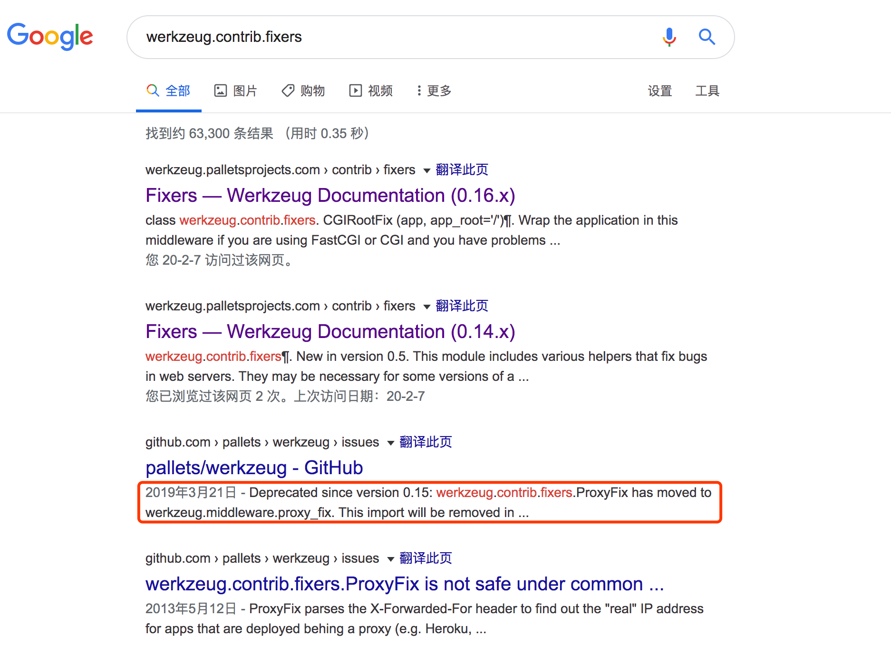

werkzeug.middleware.proxy_fix.ProxyFix 问题复盘

背景
很多人知道我在运营着一个 SaaS 站点：https://bossku.cn/，用来给中小商家提供进销存服务，对于没有特殊需求的商户来说基本是免费使用的，目前注册商家 5000+，平稳运行 5 年多了。为了降低成本，中间做了好几次迁移，最早是在阿里云，后来迁移到了新浪的SAE，后边因为腾讯云有活动，又迁移到了腾讯云。
这段时间由于疫情的原因在家办公，这周末时间比较充裕所以就看了看 Sentry 日志准备改几个 bug，改 bug 花了 15 分钟，踩坑踩了大半天，接下来我把这次遇到的坑进行一下复盘。
这个项目是刚毕业没多久开始写的，那个时候也不懂什么自动化运维的东西，每次改完代码都是手动把新代码更新到服务器上（项目用 Python 写的，所以线上服务器 git pull 一下再重启一下 gunicorn 就可以了）。
迁移到 SAE 后就完全不用考虑运维的事情了，项目目录下写好描述文件，把代码推到指定地址上就可以完成一次发布了（甚至连负载均衡、HA 这些都不用考虑，很省心）。用了两年 SAE 感觉成本还是有些高，毕竟这个项目并没有太多收入，正好又看到腾讯云的活动，算了一下如果迁移到腾讯云可以实现收支平衡甚至能有些小盈，于是大概两年前把项目迁移到了现在在用的腾讯云上，那个时候已经对自动化和容器化有意识了，在调研一些方案后，最后选择了把项目进行容器化，借助 DaoCloud 实现持续发布。
这个方案的实现流程很简单：
- 首先在我的腾讯云主机上安装 DaoCloud 的监控插件。
- 在 DaoCloud 上 hook 一个 git 项目，每当项目有更新后会根据 Dockerfile 的描述进行项目打包生成镜像。
- 然后在页面上进行配置，镜像生成完成后自动在指定机器上进行部署。
因为那时候 Github 的私有仓库还不是免费的，所以我用了国内的 coding 作为项目代码的托管仓库，完成迁移后，每过一段时间就改几个小 bug，小日子一直安逸地前进着。由于去年下半年以来工作比较紧张，就没有再去管过这个项目了，在这期间 coding 貌似被腾讯收购了，中间的很多流程发生了变动，每次登录后都会跳转到腾讯开发者的页面，我也并没有太关心。
问题
直到昨天我再去维护的时候，发现之前的配置的 git 地址失效了，DaoCloud 上的 coding 授权也失效了，再去关联也关联不上（吐槽一下，这么严重的问题这么长时间了都没发现吗），DaoCloud hook 不到我的代码更新，自然也不能完成后续的流程，所以我在第一时间把源码迁移到了 Github 的 private repo（话外语：如果之前 Github 的私有仓库是免费的我肯定也不会用国内的）。
由于 DaoCloud 无法修改项目所关联的 Git 地址，只能删掉重新创建新的项目来关联新的地址，都配置好后又出了幺蛾子， DaoCloud 的镜像仓库挂了，镜像打包后无法 push 到仓库，自然也就无法发布应用了，当时找了客服，客服没有回复（直到我写这篇 blog 的时候，一天过去了客服依然没有任何响应）。

下午的时候再去看，仓库恢复了，项目启动后却报错了：
1 | [2020-02-08 20:50:15 +0000] [10] [ERROR] Exception in worker process |
其实这个原因写的很清楚了，/code/wsgi.py 文件的第 5 行包导入失败。因为在处理前期问题时花费了很长时间，已经没有太多耐心了，而且在我本地直接启动是没有问题的，所以没有太关心项目代码的报错，只注意到了最后的：
1 | ImportError: No module named contrib.fixers |
解决
Google 后发现遇到这个问题的人很少，而且根据几个有限的回答进行修改尝试后也都无济于事，比如更新 pip 和 setuptools 等。
于是我就开始自己找问题。最开始怀疑的是 Python 源有问题，我一直使用的是阿里的源：
1 | RUN pip install -r requirements.txt -i http://mirrors.aliyun.com/pypi/simple/ --trusted-host mirrors.aliyun.com |
我尝试换成豆瓣源和清华源都不行，再后来我怀疑是 DaoCloud 打的包有问题，可是自己在本机打包还是有这个问题，再往后我又尝试修改镜像的 Python 的版本，因为这个项目用的 Python2，最新的 Python 版本是 2.7.17，我尝试降到 2.6、2.7.16、2.7.15等都不起作用，我甚至把上午写的代码进行了回滚，这个问题依然存在，这个时候心态有些爆炸了，于是准备探究下 werkzeug.contrib.fixers 这个包究竟是做什么的，于是在 Google 上搜索了这个包名，就在这时我看到一句话使我眼前一亮：

点进去后：
这个 ProxyFix 类已经在 werkzeug 1.0 版本中移除了，通过查看我的 requirement.txt 的文件：
1 | celery==3.1.24 |
可以看到我并没有指定要安装 Werkzeug 的版本，Werkzeug 是一个 WSGI 工具包。熟悉 Flask 的同学都知道，Flask 依赖了 Werkzeug，大部分情况下都只需要安装 Flask 就可以直接使用 Werkzeug 这个工具包了。
查看 Flask 的源码，setupy.py 部分内容如下：
1 | setup( |
可以看到 Flask 声明了自己需要依赖 0.7 以上的 Werkzeug，这个时候答案已经浮出水面了。
为什么我本地可以启动？
因为我本地的依赖包是很久之前安装的，所以我本地的 Werkzeug 版本是 0.14.1 的：
1 | ➜ pip freeze | grep Werk |
为什么 DaoCloud 之前一直没问题？
因为 DaoCloud 打包时有缓存层，从第一次构建完后，pip install 那一层就被缓存了下来，所以后边的都是用的缓存，安装的包也都是老版本，但是我昨天把 DaoCloud 上原有项目进行了删除、创建了一个新项目，之前的那些缓存层也就失效了，重新 pip install 时自然会去安装最新版本的 Werkzeug，这时候就安装了 1.0 以上版本，所以我在代码里引用的 ProxyFix 就找不到了。
为什么我要用 ProxyFix？
我在部署时采用了 Nginx 作为反向代理，这时候需要重写一些 HTTP 头来让应用正常工作，如：
1 | server { |
Nginx 添加了一些请求头来辅助应用获取真实的请求来源，这个时候需要用到 ProxyFix 处理一下这些请求头来让 WSGi 去正确处理这个请求，否则 WSGI 就可能认为这个请求来自服务器而不是真实的客户端。
所以我在程序入口前加入了：
1 | from werkzeug.contrib.fixers import ProxyFix |
修复
修复这个问题有两种做法：
- 根据官方文档修改源码：从
werkzeug.middleware.proxy_fix导入ProxyFix类。 - 手动指定
Werkzeug的版本号。
我选择了第二种方式，原因是我不清楚新版本的 Werkzeug 还会有哪些不兼容问题，于是我在 requirements.txt 中安装 Flask 前加入了一行 werkzeug==0.14.1，重新在本地 Docker build 并启动，一切正常，问题解决了。
总结
回顾整个问题的解决过程，还是因为自己太浮躁导致的，只想着快速把问题解决，而没有踏下心来看看每一行报错提示，更没有想着去官方文档中看看这个类库有没有变动，其实一开始也压根没想到是因为依赖的类库做了不兼容更新导致的。
通过解决这个问题，还让我知道了为什么很多地方推荐 requirements.txt 这个文件要通过在本地执行 pip freeze > requirements.txt 来生成（我通常也都是这样做的），这样生成的描述文件中依赖所依赖的那些包的版本号也会固定下来。但是在这个项目中我为了追求精简和美观，采取了手动维护这个文件：每新增一个依赖，就手动在这个文件内新增一行，这就导致了依赖所依赖的那些包的版本可能在一台新机器上重新安装时发生变动。